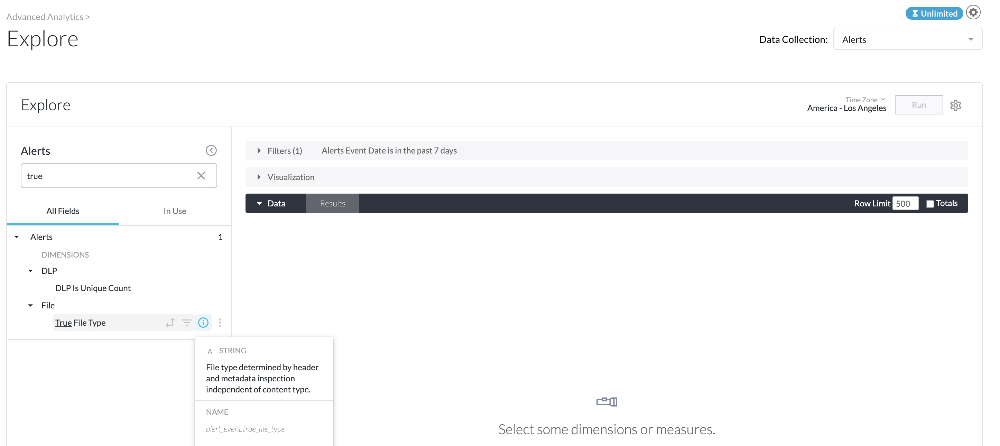
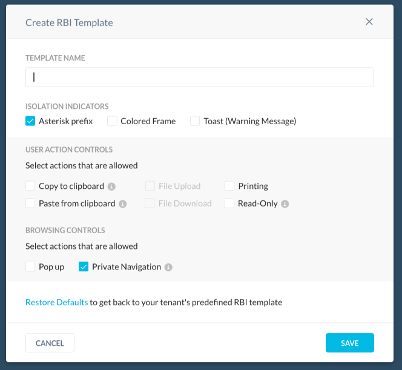
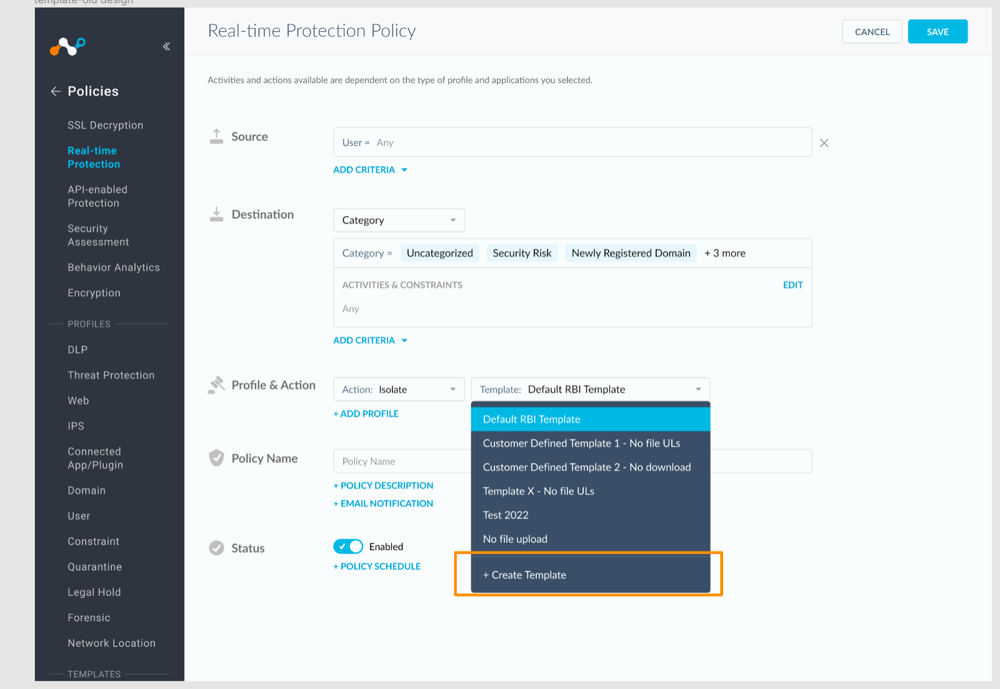
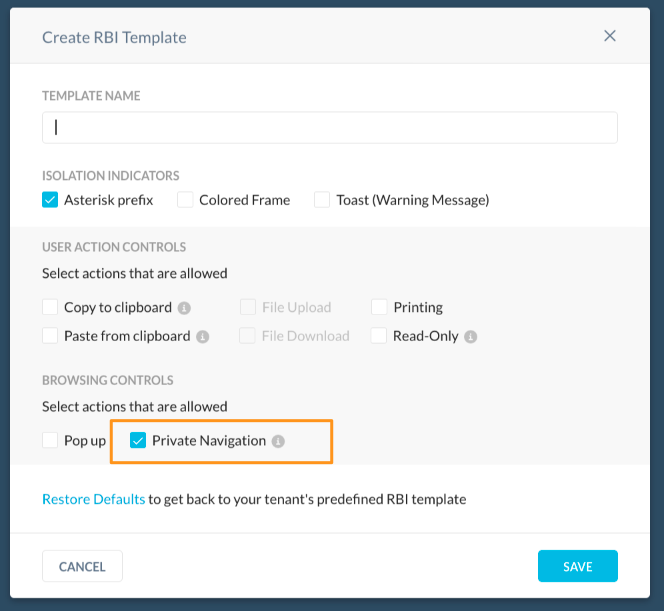

New Features And Enhancements In Release 98.0.0
Here is the list of the new features and enhancements.
CISO Sharing Feature
Share with Executives feature supports mobile or tablet viewing for the dashboard and flow view based on the user role it is shared with.
This feature enables sharing dashboards on the Advanced Analytics Group page outside the Netskope tenant to a CISO or other parties. To learn more: Sharing Netskope Advanced Analytics Dashboards
Industry Benchmarks
The Industry Benchmarks Dashboard is now available. You can access this feature from the Industry Benchmarks folder in Netskope Library, and provides organizations with cross-tenant analysis and performance benchmarking based on the suite of Netskope products deployed. To learn more: Industry Benchmarks Dashboard
Key benefits include:
Providing a bird’s-eye view of the organization’s exposure to risk: Risk score currently spans across product areas such as Threat, Application (CCI) and User (UEBA). The dashboard provides the general recommendations and best-practices to reduce risk in those areas.
Ability to assess the security posture of the organization as compared to similar-sized industry peers: Organizations can now compare themselves to others in the same industry vertical and similar company size.
Tracking progress of adoption and/or utilization overtime: Track risk score changes from week to week and month to month.
Note
This is currently available on Netskope tenants based out of the SV5/SJC1 management plane.
True File Type
With this release, admins can run reports using the True File Type field for Alerts and Application Events. The True File Type field is different from existing file type fields. This new field uses the header and metadata to determine the true type of a file based on its content.
|  |
SharePoint New File Listing Improvement
API Data Protection has introduced listing of files in newly detected sites as part of the poll based site listing flow.
Google Shared Drive Change Notification Behavior
In a policy with restrict access action, when an external user shares a file with any user within the Google Shared Drive, Netskope generates the incident/alert using a randomly-picked internal user from the Google Shared Drive. This is because Netskope cannot query Google Shared Drive as an external user.
When a user shares a folder with an external user in Google Shared Drive, Netskope processes the file notification using a randomly-picked internal user. This is because Google does not send the external user information to Netskope and Netskope cannot query Google Shared Drives as an external user.
New Default Table Support in ServiceNow
Note
This is a Controlled General Availability (formerly Limited General Availability) feature. Contact your Netskope sales representative/support to enable this on your tenant.
API Data Protection now supports additional default tables in ServiceNow. They are:
Best Configuration Item
Catalog Task
Change Phase
Change Request
Change Task
Feature Task
Group Approval
IMAC
Incident Task
KB Submission
Knowledge
Problem Task
Release Phase
Request
Request Item
Task
Ticket
Google Drive Integration For Slack
With this release, Slack supports Google Drive file sharing. Editing file share permission generates a Share event.
MacOS Version Update
Netskope supports latest macOS Version 12.5.0 that detects macOS 12.5.0 as Monterey.
Support For Google Colab
Google Drive Connector enhancement supports the Google Colab application and the following activities:
Create
Delete
Share
Update
Download
Google Data Studio Connector Enhancement
Netskope introduces a new connector for Google Data Studio that supports the following activities:
Download the report as a PDF
Upload file using File Upload Connector
Share report with the user
Share report using the link
Delete report page
Delete report
Rename Report
Embed Report
Create Report
Copy Report
Create Schedule Email
Edit Schedule Email
Delete Schedule Email
View Report
Activity Update For Facebook App and Workplace
Netskope provides support for Like and Dislike activity and discontinues support for Download All and Mark from Facebook App. You can apply real-time policies for Like activity.
Workplace By Facebook discontinues support for Send activity.
Microsoft Live Teams Activity Support
Netskope provides new connector support for accessing activity detection in MS Teams through personal account. Microsoft Live Teams application supports the following activities:
Post: Post is detected on sending, replying or editing a message. DLP support is available for this activity.
Create: Creating a chat or group detects Create activity.
Join: Generating a join code to invite people to a chat detects Join activity.
Invite: Sending a calendar meeting invite detects Invite.
View: Viewing an image file or thumbnail detects View.
Microsoft Live application supports Login and Logout, whereas Upload and Share is supported by Microsoft OneDrive.
Limitation: The Upload activity currently do not support large file uploads.
Discontinued Application Activities
Netskope discontinues support for the following activities:
Request in LinkedIn application.
Invite and Share in Twitter application.
Gmail Delete Activity
Netskope enhances Gmail Delete activity to identify email deletion from inbox, draft, or trash along with emptying trash and spam deletion.
App Instance Profile
The new App Instance profile allows admins to manage app instances for Inline Enforcement by performing operations such as creating and deleting app instances. You can create a new app instance by specifying the instance ID, instance name, and instance tag.
Note
This is currently a Controlled General Availability (formerly known as Limited Availability) feature. Contact your Sales Representative or Support to enable this feature.
Application Category Modifications
With this release, Netskope updates application category for:
Google Translate from Consumer to Translation.
Trello from Collaboration to Business Process Management.
Workfront Application Name Change
Netskope updates Workfront application name to Adobe Workfront.
Google Data Studio Connector
Netskope supports Google Data Studio connector for the following activities:
Download
Upload
Share
View
Delete
Edit
Create
Microsoft 365 Yammer DLP Support
As part of this release, Netskope has rolled out a new policy wizard and activity scan for Microsoft 365 Yammer. Now you can create a DLP policy for Microsoft 365 Yammer by navigating to Policies > API Data Protection > Next Gen. For more information, see Next Generation API Data Protection Policy Wizard.
App Access Browser Notification Feature
Presently, Netskope waits for the re-direct response before applying a block policy for websites or applications where the request URL is moved to another location and involves a re-direct to reach that location. For example, when you try to access http://www.box.com the server returns 3XX redirect response with location header redirecting to https://www.box.com.
With this enhancement, user access can be blocked based on configured policy without waiting for the response packet. This feature is enabled for all tenants and do not require any additional steps or change any policies.
SkopeIT Alerts
As part of the SSL decryption policy lookup, when the traffic is dropped because of a Real-time Protection rule match, an alert event will be generated.
Enhanced Category ID
Netskope updates transaction events with x-category-id and x-other-category-id fields. With this new addition correlating events with other Page Events like category id becomes easier. These fields are appended to the end of existing field x-cs-domain-fronted-sni.
SAML Forward Proxy Support
You can configure multiple IDPs to authenticate users with different IDPs, based on criterion (such as, access methods, authentication domain, or network location) for SAML forward proxy authentication.
Note
This is currently a Controlled General Availability (formerly known as Limited Availability) feature. Contact your Sales Representative or Support to enable this feature.
Real-time Policy
Netskope lists all Private App in Real-time policy irrespective of selected access method.
iOS Client Configuration Arguments
When Client enrollment arguments are deployed to iOS client by MDM, NPA iOS Client consumes the arguments and enrolls itself if the Client has not been enrolled yet.
Host Support For Tenant
Netskope enhances support for 1000 hosts per user. On a tenant basis, more than 1000 users can be configured. Limit is enforced by setting npa_max_limit_hosts as 1000 for all the new tenants.
NPA Private App Discovery
This feature allows to easily discover the applications and create them as Private Apps.
Additional Isolation Indicators
Netskope RBI introduces new configurable Isolation Indicators for end users, that allows you to configure how to notify end users. They browse an isolated web page for different risk scenarios. These new options expand Netskope RBI isolation notifications to include persistent and non-persistent indicators and can be stacked to adapt to your requirements. To learn more: RBI Templates
|  |
Asterisk - Tab title prefix
Colored frame
Toast - Warning Message
No Indicators
You can enable and combine isolation indicators leveraging RBI templates, and apply them to isolation policies.
End users are notified when they are browsing in isolation with the enabled isolation indicators.
Pending Changes For RBI Template
Netskope enhances the RBI templates feature to show the summary of pending changes for all RBI templates. This includes details about the fields and controls that were edited including enabled or disabled controls.
 |
Prior to this enhancement the RBI template objects displayed a warning signal if they had pending changes, but could not review the summary of pending changes. To learn more: Create a Real-time Protection Policy for Isolation (Targeted RBI)
RBI Template For Inline Policy
Real Time Protection Policy Create and edit allows creating RBI template inside the same page when action is set to isolate. You can see the + Create Template option in the Template drop down menu to open the Create RBI Template.
|  |
Prior to this enhancement, you can only apply already available RBI templates as part of creating or editing RBI policy process. To learn more: Create a Real-time Protection Policy for Isolation (Targeted RBI)
Private Navigation Control
Netskope RBI introduces the new Private Navigation control, that allows or blocks the transportation of any cookies generated while browsing in isolation and storing them in your browsers. When private browsing is enabled, cookies do not leave the isolated environment.
|  |
You can enable Private Navigation leveraging RBI templates, and apply them to isolation policies.
When private navigation is disabled and you return to an isolated web page, these web pages can leverage the cookies stored in the end user’s browser. To learn more: RBI Templates
Note
Cookies generated in isolation can not be leveraged outside Netskope RBI.
New Predefined Rules for Microsoft Office 365 & Salesforce
SSPM provides new predefined rules for Microsoft Office 365 and Salesforce.
The new Microsoft Office 365 rules are listed below:
Domain | Rule Name | Description |
|---|---|---|
Communication | Ensure bookings is set to off for the entire organization. | Disable Microsoft bookings for the entire organization. |
Email Security | Ensure to have a custom list of accepted domains. | Check if a custom list of accepted domains is created. |
Email Security | Ensure connectors are configured for inbound messaging. | Check if connectors are leveraged for inbound messaging. |
Email Security | Ensure mailbox archive retention configuration is set to less than 2 years. | Check if the mailbox archive retention configuration is set to less than 2 years. |
Information Governance | Ensure file retention is set for files in OneDrive after a user account is marked deleted. | Ensure that if a users' Microsoft 365 account is deleted, the respective OneDrive files are preserved for a dedicated period of time. |
Mobile Security | Lock mobile devices after a period of inactivity. | Require the users to configure their mobile devices to lock after a period of inactivity to prevent unauthorized access. |
Mobile Security | Ensure that mobile device password reuse is prohibited. | Disallow users to reuse the same password on their mobile devices. |
Threat Protection | Ensure list of specific file types (TBD) are blocked from being synced between OneDrive & SharePoint. | Block potentially malicious file types from clients automatically syncing to OneDrive. |
Threat Protection | Ensure Safe Link setup is configured in email messages and Office documents. | Enable the Advanced Threat Protection (ATP) Safe Links policy for Office applications allows URLs that exist inside of Office documents opened by Office, Office Online and Office mobile to be processed against ATP time-of-click verification. |
Threat Protection | Ensure Safe Documents for Office Client setting is turned on. | Enable Safe Documents across the organization and prevent users from leaving protected view when the document has been identified as malicious. |
Threat Protection | Ensure Safe Link setup is configured in email messages and Office documents. | Safe Links can help protect your organization by providing time-of-click verification of web addresses (URLs) in email messages and Office documents. Disabling user-click-through ensures your organization has maximum protection against malicious links. |
Threat Protection | Ensure zero-hour auto purge (ZAP) is turned on for malware. | Zero-hour auto purge (ZAP) helps quarantine messages that contain potentially malicious attachments before users can view them. |
Threat Protection | Ensure zero-hour auto purge (ZAP) for spam is turned on. | For unread messages that are identified as spam after delivery, the Zero-hour auto purge (ZAP) moves those messages to junk email folder. The outcome depends on the action that is configured for the spam filtering verdict in the applicable anti-spam policy. |
For more information, see Microsoft Office 365 Predefined Rules.
The new Salesforce rules are listed below:
Domain | Rule Name | Description |
|---|---|---|
Access / Authentication | Ensure admin login as any user is not enabled. | Ensure that administrators cannot log in as `any user`. |
Access /Authentication | Ensure user provisioning for connected apps require approval. | Ensures that user provisioning requests for connected apps in Salesforce are configured to require approval for certain processes. |
Auditing | Ensure Email Relay is setup within the organization. | Ensures that an email relay is set up within the Salesforce organization. You can set up an email relay for Salesforce-generated email by configuring Salesforce to automatically route email through your company’s Simple Mail Transfer Protocol (SMTP) server. |
Certificate | Ensure certificate keys expire within 1 year. | Ensure all certificates expire within a year and removed from the organization to avoid malicious usage from third-party apps. |
For more information, see Salesforce Predefined Rules.
Removed SSL Pinned Certificate from the Error Settings
Netskope removed the stale error setting SSL Pinned Certificate from the menu because it's not ready for users to use.
To learn more: Managing Error Settings.